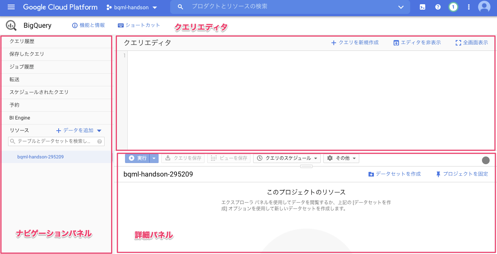
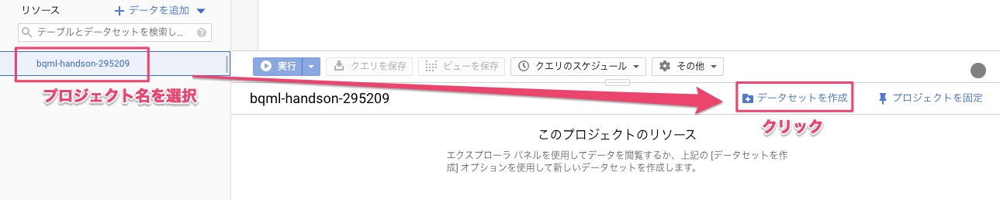
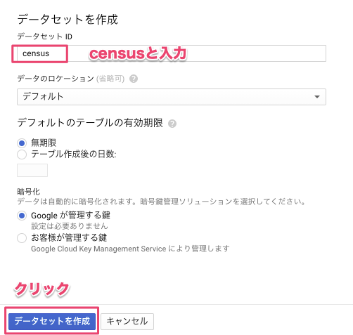
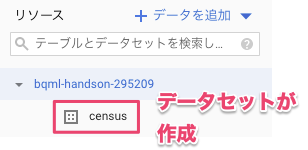
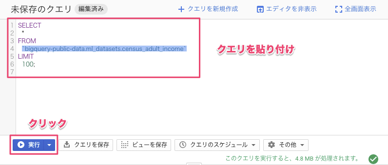
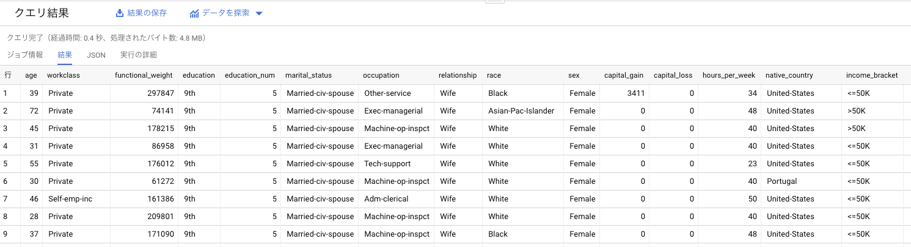
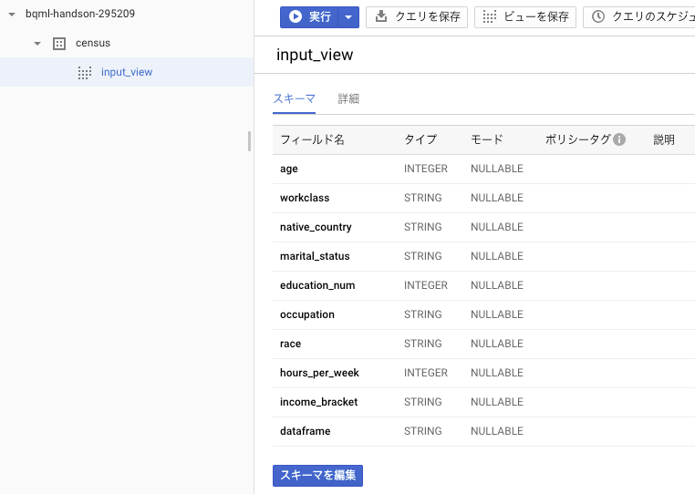
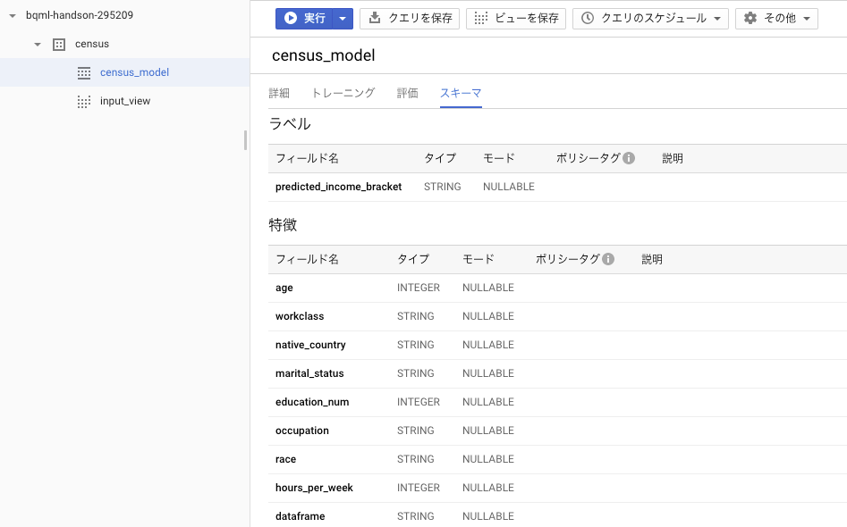
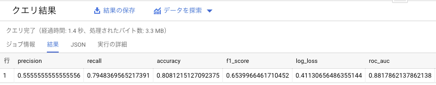
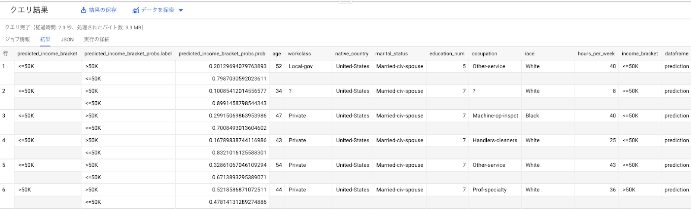

このハンズオンではBigQuery ML を使用して、 2 項ロジスティック回帰モデルによるデータ分類の予測を体験いただきます。
分析対象として、米国国勢調査のデータを使用します。年齢や職業、教育水準といった特徴から、その回答者の年収が「5万ドル超」「5万ドル以下」どちらであるかを予測します。
このハンズオンではBigQueryの料金が発生します。igQueryでは毎月1TBまでのクエリは無料枠であるため、当ハンズオンの手順のみを実施する場合は無料で実施いただけます。
ただしご自身のGCPプロジェクトで他の用途でもBigQueryを使われている場合は費用が発生する可能性があることあらかじめご了承ください。
GCP(Google Cloud Platform)を使用します。 こちらの手順を参考にGCPプロジェクトを作成してください。
※「プロジェクトで利用するサービスを有効化」の実施は不要です。
※GCPの無料トライアルをご利用いただかない場合、BigQueryMLの使用料金が発生します。予めご了承いただいた上でハンズオンを進めてください。
当ハンズオンはGCPの公式チュートリアルをベースにしています。
それでは「Next」ボタンを押してハンズオンに取り組みましょう！
最初のステップとして、モデルを格納する BigQuery データセットを作成します。データセットを作成する手順は次のとおりです。



以上でデータセットの作成は完了です。以下のようにプロジェクト名の下に作成したデータセットが表示されていればOKです。

今回のトレーニングで使用するデータをSQLを用いて確認します。Google Cloudが公開する一般データセットより、米国国勢調査による成人の収入データが記録されている「census_adult_imcome」を使用します。
SELECT
*
FROM
`bigquery-public-data.ml_datasets.census_adult_income`
LIMIT
100;

クエリ結果を確認してみましょう。
次に、ロジスティック回帰モデルのトレーニングに使用するデータを選択します。このチュートリアルでは、次の属性に基づいて国勢調査回答者の所得を予測します。
次のクエリでは、トレーニング データをまとめるビューを作成します。このビューは、チュートリアルの後半で CREATE MODEL ステートメントで使われます。
CREATE OR REPLACE VIEW
`census.input_view` AS
SELECT
age,
workclass,
native_country,
marital_status,
education_num,
occupation,
race,
hours_per_week,
income_bracket,
CASE
WHEN MOD(functional_weight, 10) < 8 THEN 'training'
WHEN MOD(functional_weight, 10) = 8 THEN 'evaluation'
WHEN MOD(functional_weight, 10) = 9 THEN 'prediction'
END AS dataframe
FROM
`bigquery-public-data.ml_datasets.census_adult_income`このクエリは、回答者の教育水準を表す education_num や、回答者が行う業務のタイプを表す workclass など、国勢調査回答者に関するデータを抽出します。このクエリでは、データが重複するカテゴリは除外しています。たとえば、census_adult_income テーブルの列 education と education_num は同じデータを異なる形式で表しているため、このクエリでは education 列を除外しています。dataframe 列では、除外された functional_weight 列を使用して、データソースの 80% にトレーニング用としてラベルを付け、残りのデータを評価用と予測用として予約しています。クエリでこれらの列を含むビューを作成し、後でそれを使用してトレーニングと予測を行えるようにします。
成功すると「このステートメントで新しいビュー <プロジェクトID>:census.input_view が作成されました。」とメッセージが表示されます。

トレーニング データを確認したら、次のステップでは、そのデータを使用してロジスティック回帰モデルを作成します。
CREATE MODEL ステートメントを 'LOGISTIC_REG' オプション付きで使用することで、ロジスティック回帰モデルの作成とトレーニングが行えます。次のクエリでは、CREATE MODEL ステートメントを使用して、前のクエリで作成したビューで新しい 2 項ロジスティック回帰モデルをトレーニングしています。
CREATE OR REPLACE MODEL
`census.census_model`
OPTIONS
( model_type='LOGISTIC_REG',
auto_class_weights=TRUE,
input_label_cols=['income_bracket']
) AS
SELECT
*
FROM
`census.input_view`
WHERE
dataframe = 'training'CREATE MODELステートメントは、SELECT ステートメントのトレーニング データを使用してモデルをトレーニングしています。
OPTIONS 句は、モデルタイプとトレーニング オプションを指定します。ここでは、LOGISTIC_REG オプションでロジスティック回帰モデルタイプを指定しています。2 項ロジスティック回帰モデルか多項ロジスティック回帰モデルかを指定する必要はありません。BigQuery ML はラベル列の一意の値の数に基づいてどちらをトレーニングするかを判断できます。
input_label_cols オプションは、SELECT ステートメントでラベル列として使用する列を指定します。ここでは、ラベル列は income_bracket であるため、モデルは他の行の値に基づいて、income_bracket の 2 つの値のどちらに分類される可能性が高いかを学習します。
'auto_class_weights=TRUE' オプションは、トレーニング データ内のクラスラベルのバランスをとります。デフォルトでは、トレーニング データは重み付けされません。トレーニング データ内のラベルが不均衡である場合、モデルは最も出現回数の多いラベルクラスをより重視して予測するように学習することがあります。この場合、データセット内の回答者の大多数は低い方の所得階層に属します。このため、低い方の所得階層を過度に重視して予測するモデルになる可能性があります。クラスの重みは、各クラスの頻度に反比例した重みを計算して、クラスラベルのバランスをとります。
SELECT ステートメントは、ステップ 2 で作成したビュー(input_view)に対してクエリを実行します。このビューには、モデルをトレーニングするための特徴データの列のみが含まれます。WHERE 句は input_view の行をフィルタして、トレーニング データフレームに属する行のみがトレーニング データに含まれるようにします。

モデルを作成したら、ML.EVALUATE 関数を使用してモデルの性能を評価します。ML.EVALUATE 関数は、実際のデータに対する予測値を評価します。
モデルの評価に使用するクエリは次のとおりです。
SELECT
*
FROM
ML.EVALUATE (MODEL `census.census_model`,
(
SELECT
*
FROM
`census.input_view`
WHERE
dataframe = 'evaluation'
)
)ML.EVALUATE 関数は、ステップ 1 でトレーニングされたモデルと、SELECT サブクエリによって返された評価データを取得します。この関数は、モデルに関する統計を単一行で返します。このクエリは、input_view のデータを評価データとして使用します。WHERE 句で、サブクエリに evaluation データフレームの行のみが含まれるように入力データをフィルタします。

ロジスティック回帰を使用しているため、結果には次の列が含まれます。
モデルの精度は、正確に予測された値と予測全体の比率を表します。精度が .80 の場合、予測の 80% が正しいことを意味します。
特定の回答者が属する所得階層を特定するには、ML.PREDICT 関数を使用します。次のクエリは、prediction データフレーム内のすべての回答者の所得階層を予測します。
SELECT
*
FROM
ML.PREDICT (MODEL `census.census_model`,
(
SELECT
*
FROM
`census.input_view`
WHERE
dataframe = 'prediction'
)
)ML.PREDICT 関数は、モデルと、「prediction」データフレームの行のみを含めるようにフィルタされた input_view のデータを使用して、結果を予測します。先頭の SELECT ステートメントで、ML.PREDICT 関数の出力を取得します。

このチュートリアルで使用したリソースについて、Google Cloud Platform アカウントに課金されないようにする手順は次のとおりです。
こちらの記事もご参照ください。